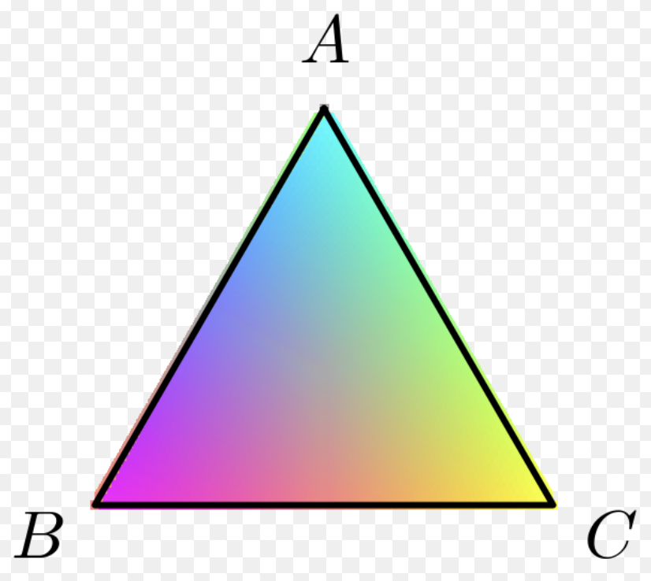
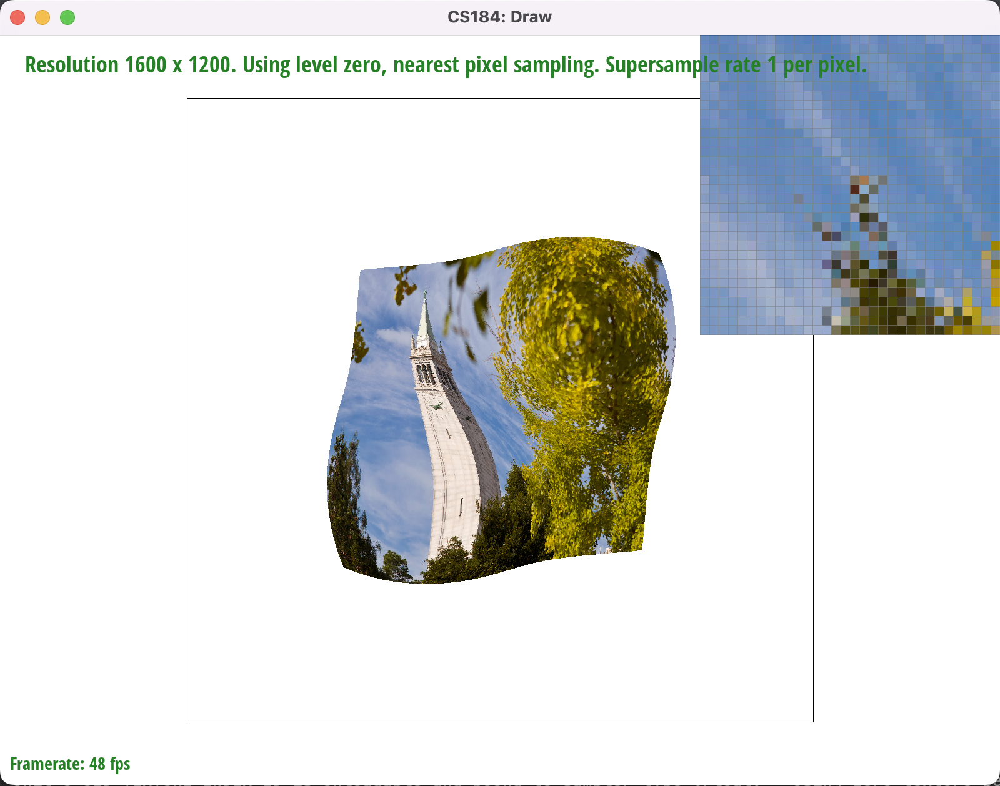

Overview
In our project, we primarily focused on implementing rasterization techniques and sampling techniques for us to render different textures, lines, and points. We used multiple different strategies for sampling as well as many mathematical tools such as vector and matrix transforms as well as barycentric coordinates in order to model certain features within our images so we could render textures and certain graphics using different sampling and representation strategies. As a whole, our project was to implement a simple graphics renderer that can interchange multiple different techniques to provide sharper or better textured images based on the specifications of SVGs, which are widely used amongst programmers and graphic designers. From completing the homework, I learned just how in depth representing images and rendering graphics can be – I prior thought that it was primarily initializing pixels and some slight math, but this project challenged that prior assumption as we had to implement complex rendering algorithms and complex sampling algorithms to represent our images in different resolutions. Overall, the project gave me much better insight into how images and SVGs are rendered in the real-world and taught me much new math and new programmatic methods through which we can better visualize images we need in our day-to-day programming or design tasks.
Task 1: Drawing Triangles
Prior to performing supersampling, we rasterize triangles by walking through each pixel within the bounding box of our triangle (determined by our three parameterized vertices in our rasterize function), then using geometry to figure out whether a given point in this bounding box is within the triangle determined by the three vertices provided (using three point-in-triangle tests). Additionally, we check every single point with the addition of 0.5 to each of its coordinates since we aim to check if the center of the pixel is within the triangle, as opposed to the corner of the pixel. If this point is within our triangle or on one of the edges, then we call fill_pixel on this point and correspondingly we have rasterized every single point within our triangle. In this case, our point-in-triangle tests are vertex-ordering-invariant, so we do not need to check the winding order of the triangle to calculate whether a point is inside the triangle. Now, we generate the bounding box by using the maximum and minimum values of x and y provided in the function, so thus our algorithm only checks the pixels within the bounding box of the triangle and thus has a correct runtime (as opposed to an algorithm that checks every pixel within the framebuffer which would have worse performance). Extra credit was not completed for this problem.
Task 2: SuperSampling
In order to do supersampling, we first had to increase the size of the sample buffer to contain more pixel values since we would sample each pixel at a value of sample_rate, so thus we would need to multiply the size of the sample buffer by sample_rate. We do this within the set_sample_rate, set_framebuffer_target, and resolve_to_framebuffer methods. By multiplying sample_rate to the size of the sample buffer, we allow our mathematic logic to create a “block” of pixels of size sample_rate next to the pixel we are supersampling – specifically sample_buffer[(y * width + x) * sample_rate] represents the block of pixels supersampled for pixel at location (x, y). Then, sample_buffer[(y * width + x) * sample_rate + k] represents the “k”th supersampled pixel at (x, y). Thus, we also change fill_pixel to fill all of the supersampled pixels at location (x, y) passed into fill_pixel, using a for loop to fill all supersampled pixels at this location in our sample buffer. Then, we change our rasterize_triangle function to sample each one of our original pixels at a rate of sqrt(sample_rate) * sqrt(sample_rate), which introduces an additional two for loops into rasterize_triangle function. Then, instead of calling fill_pixel as in Task 1, we set the color of each supersampled pixel in our sample buffer directly (and we use the value of the supersampled pixel directly as opposed to adding 0.5 to each pixel value). Finally, since now our supersampled buffer is populated with all supersampled pixels, we can change resolve_to_framebuffer to get the average color amongst a supersampled set of pixels at (x, y), (iterated over all x, y in the resolution of the image). Once we get the average sampled rgb values from each of our supersampled sets, we set our final color as their average (each RGB divided by the sample rate), and set this value in the lower resolution rgb_framebuffer_target. Since this new image has our more averaged pixel values from supersampling, our edges appear smoother when increasing the rate of supersampling in our final image, so we have successfully antialiased our triangles since the edge pixels show more averaged values as opposed to the static values in task 1. Supersampling is useful in this regard as it helps provide more realistic values for our triangle edges and allows for smoother images, getting rid of more jagged edges. Extra credit was not completed for this problem.
We see that the images when supersampling with higher sampling rates do not have as many jagged edges and are smoother – at a pixel by pixel level, we see that supersampling allows nearby blocks to average out pixel values and have lighter shades of the same color (in this image specifically, lighter shades of the red triangle color). Thus, these lighter shade average values give us perceptibly smoother edges in the higher supersampled images.
Task 3: Transforms
In this section, I was trying to get cubeman to do a field goal football celebration, with the cubeman’s arms pointing upwards indicating that the field goal was made. I was able to do this by changing the scaling of the cubeman’s forearms to (0.2, 0.6) instead of (0.6, 0.2), then changing the bounds of their translation to (+/- 50, -20) for their updated hand positions. The resultant image is attached below and provided in the code submission:
Task 4: Barycentric
Barycentric coordinates are a coordinate system which allow individuals to represent points within a geometric shape as the weighted average sum of its vertices. More specifically, barycentric coordinates allow individuals to explain how a certain vertex within a geometric shape is “influenced” by the corresponding vertices making up the shape. In the case of our project, given any triangle we wish to rasterize, we know the vertices can be represented as X, Y, Z; and the barycentric coordinate system allows us to represent our point P as a weighted sum P = aX + bY + cZ. This is quite helpful in our project as a lot of our computation regards checking whether a point is within a triangle and its relationship to the boundary of the triangle and its vertices, so having a coordinate system with coefficients representing these quantities makes our computation for rasterizing triangles easier and our code much more succinct. Below is a sample image of a triangle rasterized by the barycentric coordinate process, with each vertex colored differently representing the “influence” they have over the points within the triangle. As the image shows, the barycentric coordinate system allows for much easier and smoother coloring of points within the triangle as every color is blended as a mix of vertex influence and our triangle produces a smooth gradient-esque image.

Below, we also have the image of our test7 blended color wheel using Barycentric coordinates:
Task 5: "Pixel Sampling"
Pixel sampling is the process of filling in pixels with sampled pixel color values near the pixel. Pixel sampling can use a variety of techniques such as nearest neighbor pixel sampling, which fills in our pixel color with the nearest sampled neighbor, or bilinear pixel sampling which fills in our pixel color with an average of a set of the nearest pixels. We use this strategy to represent textures in different resolutions and to reduce computations when drawing triangles with different textures. We implemented our sample_nearest function through getting the texel (mip.get_texel) after scaling our input vector x and y by the height and width of the image (subtracted by one as to avoid the edge case of hitting the boundary of our frame). This way, we round our input vector values and get the closest texture value for our pixel (which is the nearest neighbor). For sample bilinear, we first get the four surrounding texels (similar to how we did in sample_nearest), then use a lerp function to average the colors of the surrounding four texels. We first perform two horizontal lerps then a vertical lerp to average the colors in our sample_bilinear function. This provides us an average final texture value when performing our pixel sampling. Now that we had both sampling methods working, we could repeat our code for our barycentric rasterization in the function rasterize_textured_triangle. We would have to modify this code to call tex.sample_bilinear or tex.sample_nearest depending on the provided value of LSM, and we had to provide our u, v vector values weighted by the values of alpha, beta, and gamma found through our barycentric coordinate calculations. Then, we set our sample buffer the exact same way as before (described in supersampling in task 2), but with the value from our tex.sample_nearest/tex.sample_bilinear function. Once this was completed, we were able to successfully load textures into our image and saw accurate results when switching between our two pixel sampling methods, as shown below.
As we can see from the images, we universally get smoother results when using a higher supersampling rate, regardless of which pixel sampling technique we use. One key difference, however, is that the pixel sampling approach, since it only samples one additional pixel, can give way to more jagged edges and fewer preserved details in the image if its nearest neighbors are also close to an edge or if the image is in lower resolution. We see this most dominant in the image with supersampling rate of 1 and nearest neighbor sampling. In contrast, the bilinear sampling approach samples four nearest pixels, and thus has fewer jagged edges, makes the image sharper, and preserves smaller details better, most visible in the image with supersampling rate of 1 with bilinear sampling (this detail is even more starkly visible in the image with supersampling at rate 16).
Task 6: "Level Sampling"
In the context of our project, level sampling is the process of selecting the appropriate level of resolution for rendering an image since each mipmap is represented at different levels of detail, and level sampling allows programmers to decide the best level at which to display the image resolution. Specifically, in this project, we had the option to sample from level 0, from using nearest neighbor level sampling, or using bilinear interpolation for level sampling. In this manner, we can best identify which level of detail to represent our image in different resolutions and which MipLevel to use. In our texture mapping task, we had to implement this through our tex.sample function, which we would then call in the rasterize_texture_triangle function. Within our tex.sample function, we had if statements and switch/case statements to handle our pixel sampling methods (as in task 5, except we moved the logic from the rasterize function to tex.sample). We integrated our level sampling options into these if statements where we would set the level to 0 and call sample nearest or sample bilinear (depending on LSM) on our uv vector whenever provided the PSM of LEVEL_0. Similarly, for nearest neighbor, we would call get_level, then bound this level with 0 and the size of the mipmap subtracted by 1 (since we cannot pass a level which is too large or negative), then round this value to the nearest level and call sample nearest or sample bilinear and return this color. Finally, for bilinear level sampling, we would call get_level to get the current level, bound it with 0 and the mipmap size - 1, then average the samples of the closest two levels and return the resultant color. We would call sample_bilinear or sample_nearest depending on the value of LSM. Then, once this functionality was done, I implemented the tex.get_level function which would return the current level. I implemented this function by subtracting the dx and uv vectors, as well as the dy and uv vectors, then multiplying their corresponding first and second components by the width and height subtracted by 1, respectively. Then, I returned the logarithm base 2 of the max of each of their norms, as described in lecture. Finally, the only changes left to make were with SampleParams and the rasterize function. Since we had already moved all of our LSM and PSM logic code (which decides which sample functions we call and how to parse the current level) into tex.sample, we only had to change our rasterize function to perform the same barycentric calculations on the points (x, y); (x + 1, y); (x, y + 1) instead of just (x, y) since we needed to calculate gradients to perform our level sampling. Then, using these values of alpha, beta, and gamma on each of our new barycentric vectors, we could pass this into the SampleParams p_uv, p_uv_dx, and p_uv_dy. Finally, we passed this SampleParams object into tex.sample, and returned the resultant color into the sample_buffer.
Between the three techniques, we see that since level sampling, at least in the way we implemented it through tex.sample would call sample_nearest or sample_bilinear at least once for each nearest neighbor or bilinear level sample, so thus the pixel sampling itself is more efficient than the level sampling which relies on pixel sampling. Additionally, the pixel and level sampling only sampled a small finite number of points next to the original pixel while the supersampling approach could sample a variable number of closeby pixels contingent on the sample rate, implying that supersampling would be the slowest approach in terms of time. Additionally, the memory tradeoffs between pixel and level sampling are quite similar, but bilinear sampling is quite slower and more memory intensive than nearest neighbor sampling due to the sampling tradeoff of four pixels against one, or two levels against one. Further, we see that supersampling, due to the variable number of extra pixels sampled, can have significant memory tradeoffs as we are required to multiply the size of the sample buffer by the new sample rate, which can be arbitrarily large. Finally, we see that the bilinear sampling approaches and supersampling are much more effective than nearest neighbor at antialiasing since nearest neighbor can still result in jagged edges or loss of detail, while bilinear sampling and supersampling accommodate more for this by taking more weighted averages of nearby pixels or levels. From the pixel inspector in each of our resultant images, we can see the differences between each method and the slight loss of detail and jagged edges more present in nearest sampling as opposed to bilinear sampling.
Finally, we have attached images of the four different versions of the Campanile, according to the specifications of the homework document:
